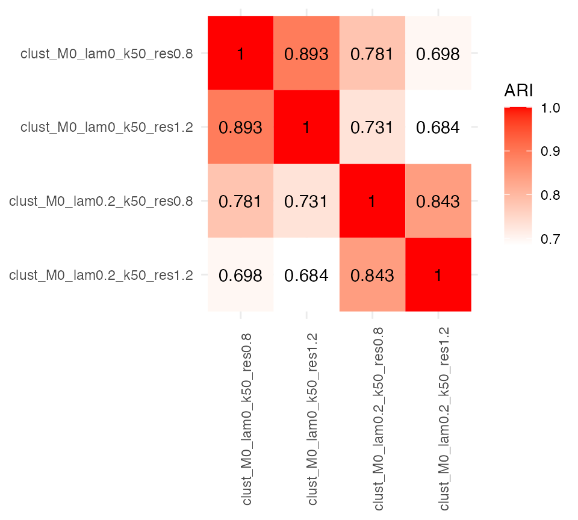
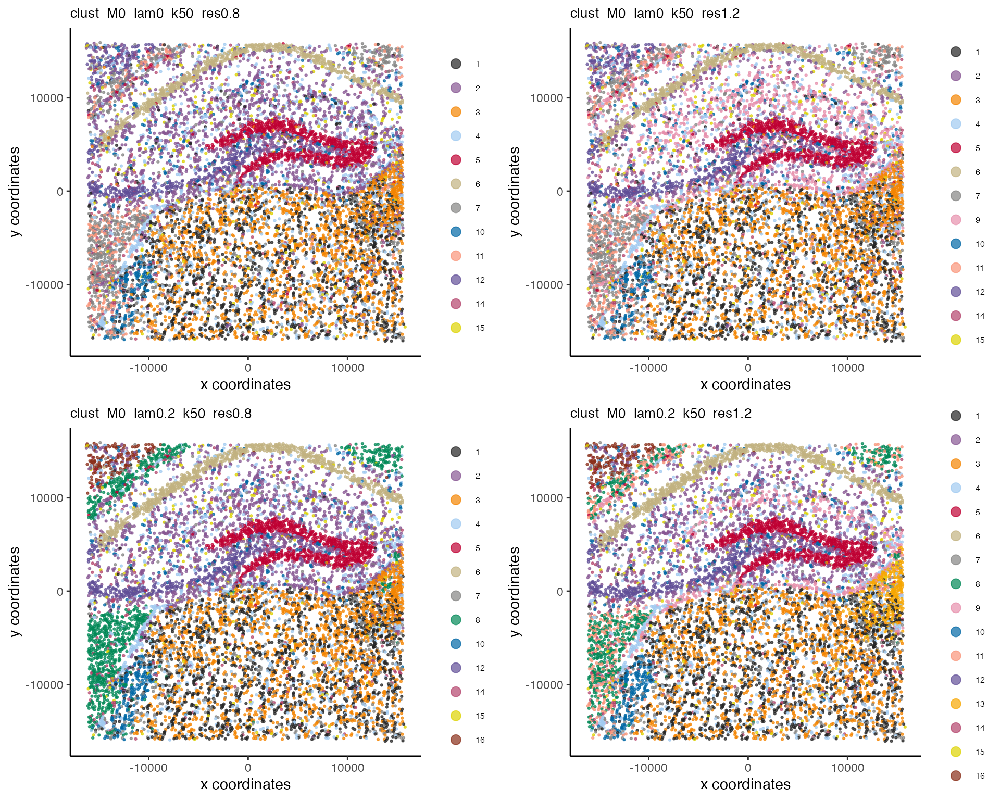
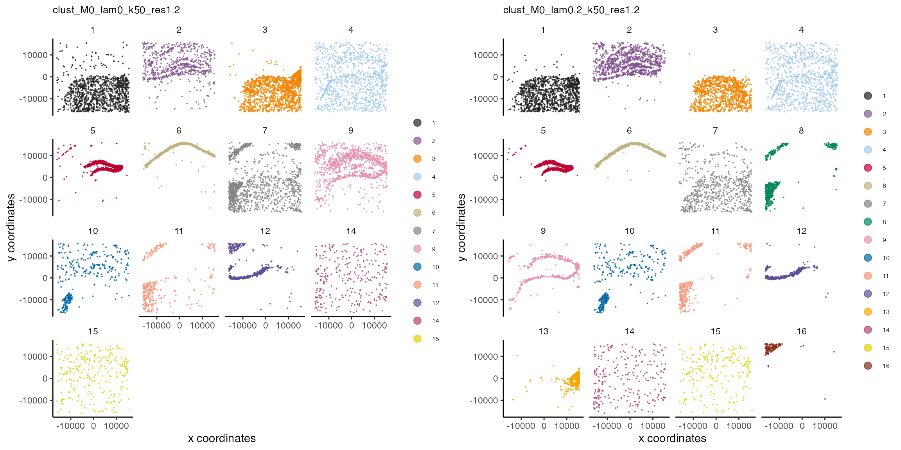
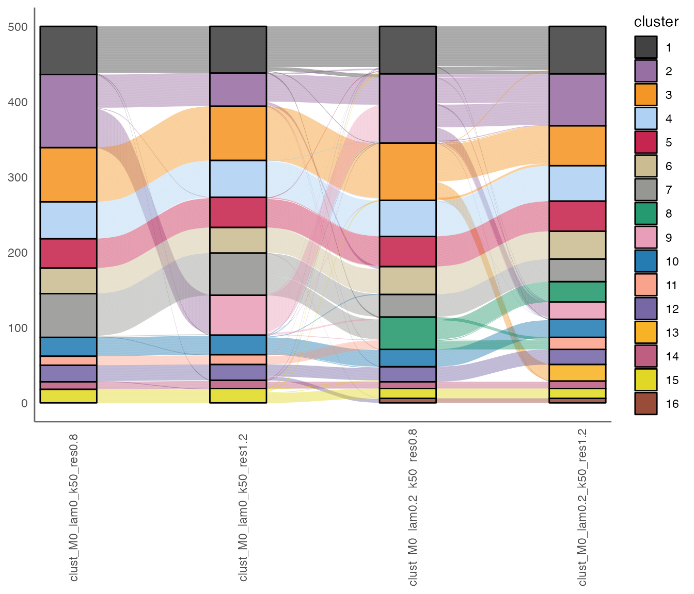

vignettes/hippocampus-analysis.Rmd
hippocampus-analysis.RmdHere, we demonstrate a grid search of clustering parameters with a
mouse hippocampus VeraFISH dataset. BANKSY currently provides
four algorithms for clustering the BANKSY matrix with
ClusterBanksy: Leiden (default), Louvain, k-means, and
model-based clustering. In this vignette, we run only Leiden clustering.
See ?ClusterBanksy for more details on the parameters for
different clustering methods.
First, we construct the BanksyObject. The dataset comprises
gene expression for 10,944 cells and 120 genes in 2 spatial dimensions.
See ?Banksy::hippocampus for more details.
library(Banksy)
library(ggplot2)
library(gridExtra)
data(hippocampus)
expr <- hippocampus$expression
locs <- hippocampus$locations
# Store total counts and number of expressed genes
total_count <- colSums(expr)
num_genes <- colSums(expr > 0)
meta <- data.frame(total_count = total_count, num_genes = num_genes)
# Construct BanksyObject
bank <- BanksyObject(own.expr = expr, cell.locs = locs, meta.data = meta)
bank
#> Object of class BanksyObject
#> Assay with 10994 cells 120 features
#> Spatial dimensions: sdimx sdimy
#> Metadata names: cell_ID nCount NODG
#> Dimension reductions:The lambda parameter is a mixing parameter in
[0,1] which determines how much spatial information is
incorporated for clustering. With smaller values of lambda
(e.g. [0,0.25]), BANKY operates in cell-typing
mode, while at higher levels of lambda, BANKSY operates in
zone-finding mode. See the pre-print for more details.
Leiden graph-based clustering admits two parameters:
k.neighbors and resolution.
k.neighbors determines the number of k nearest neighbors
used to construct the shared nearest neighbors graph. Leiden clustering
is then performed on the resultant graph with resolution
resolution.
We first process the data for clustering:
bank <- SubsetBanksy(bank, metadata = total_count > quantile(total_count, 0.05) &
total_count < quantile(total_count, 0.98))
bank <- NormalizeBanksy(bank)
bank <- ComputeBanksy(bank)
bank <- ScaleBanksy(bank)Before clustering, we define a parameter space. Here, we’ll explore
different combinations of lambda and
resolution while fixing kneighbours. We first
run PCA on the BANKSY matrix with 20 PCs for each lambda.
Clustering is then performed on the PCs (by default):
lam <- c(0, 0.2)
res <- c(0.8, 1.2)
knbr <- 50
bank <- RunBanksyPCA(bank, lambda = lam, npcs = 20)
#> Running PCA for M=1 lambda=0
#> BANKSY matrix with own.expr, F0, F1
#> Squared lambdas: 1, 0, 0
#> Running PCA for M=1 lambda=0.2
#> BANKSY matrix with own.expr, F0, F1
#> Squared lambdas: 0.8, 0.1333, 0.0667
set.seed(42)
bank <- ClusterBanksy(bank, lambda = lam, pca = TRUE, npcs = 20,
method = 'leiden', k.neighbors = knbr, resolution = res)This populates the meta.data slot of the
BanksyObject with cluster labels for each combination of
parameters:
head(meta.data(bank))
#> cell_ID nCount NODG clust_M1_lam0_k50_res0.8
#> cell_1276 cell_1276 266 51 8
#> cell_691 cell_691 132 36 4
#> cell_396 cell_396 95 27 1
#> cell_68 cell_68 579 72 8
#> cell_6954 cell_6954 116 29 7
#> cell_7074 cell_7074 28 17 6
#> clust_M1_lam0_k50_res1.2 clust_M1_lam0.2_k50_res0.8
#> cell_1276 9 14
#> cell_691 3 8
#> cell_396 7 14
#> cell_68 9 14
#> cell_6954 8 7
#> cell_7074 6 6
#> clust_M1_lam0.2_k50_res1.2
#> cell_1276 17
#> cell_691 7
#> cell_396 4
#> cell_68 17
#> cell_6954 8
#> cell_7074 4To compare clustering labels from different parameter combinations,
the package implements the getARI and plotARI
functions. These compute the adjusted Rand index (ARI) for all pairs of
clusters to assess the similarity of clustering labels. Observe that
clusters with the same lambda share more similarity:
getARI(bank)
#> clust_M1_lam0_k50_res0.8 clust_M1_lam0_k50_res1.2
#> clust_M1_lam0_k50_res0.8 1.000 0.887
#> clust_M1_lam0_k50_res1.2 0.887 1.000
#> clust_M1_lam0.2_k50_res0.8 0.755 0.691
#> clust_M1_lam0.2_k50_res1.2 0.668 0.725
#> clust_M1_lam0.2_k50_res0.8
#> clust_M1_lam0_k50_res0.8 0.755
#> clust_M1_lam0_k50_res1.2 0.691
#> clust_M1_lam0.2_k50_res0.8 1.000
#> clust_M1_lam0.2_k50_res1.2 0.811
#> clust_M1_lam0.2_k50_res1.2
#> clust_M1_lam0_k50_res0.8 0.668
#> clust_M1_lam0_k50_res1.2 0.725
#> clust_M1_lam0.2_k50_res0.8 0.811
#> clust_M1_lam0.2_k50_res1.2 1.000
plotARI(bank) 
To visually compare between clusters obtained with different combination of parameters (a parameter run), the package implements ConnectClusters which performs a mapping to harmonise cluster labels between different parameter runs.
bank <- ConnectClusters(bank, map.to = 'clust_M1_lam0.2_k50_res1.2')
head(meta.data(bank))
#> cell_ID nCount NODG clust_M1_lam0_k50_res0.8
#> cell_1276 cell_1276 266 51 13
#> cell_691 cell_691 132 36 7
#> cell_396 cell_396 95 27 5
#> cell_68 cell_68 579 72 13
#> cell_6954 cell_6954 116 29 8
#> cell_7074 cell_7074 28 17 6
#> clust_M1_lam0_k50_res1.2 clust_M1_lam0.2_k50_res0.8
#> cell_1276 13 17
#> cell_691 7 7
#> cell_396 4 17
#> cell_68 13 17
#> cell_6954 8 8
#> cell_7074 6 6
#> clust_M1_lam0.2_k50_res1.2
#> cell_1276 17
#> cell_691 7
#> cell_396 4
#> cell_68 17
#> cell_6954 8
#> cell_7074 4This updates the meta.data slot with new cluster labels
that can be used for visualisation. We can visualise connected output as
follows.
First, obtain cluster names:
cnms <- clust.names(bank)Then, visualise the cluster runs:
plotSpatialFeatures(bank, by = cnms, type = rep('discrete', 4),
nrow = 2, ncol = 2, main = cnms, main.size = 10)
We visualise the differences between clusters obtained with
non-spatial clustering (lam=0) and BANKSY in cell-typing
mode (lam=0.3) more finely by splitting the clusters with
wrap = TRUE:
p1 <- plotSpatial(bank, by = cnms[2], type = 'discrete',
main = cnms[2], main.size = 10, pt.size = 0.1, wrap = TRUE)
p2 <- plotSpatial(bank, by = cnms[4], type = 'discrete',
main = cnms[4], main.size = 10, pt.size = 0.1, wrap = TRUE)
grid.arrange(p1, p2, ncol = 2)
In addition, one can also visualise differences in the clustering labels with alluvial plots:
plotAlluvia(bank)
sessionInfo()
#> R version 4.2.1 (2022-06-23 ucrt)
#> Platform: x86_64-w64-mingw32/x64 (64-bit)
#> Running under: Windows 10 x64 (build 19043)
#>
#> Matrix products: default
#>
#> locale:
#> [1] LC_COLLATE=English_Singapore.utf8 LC_CTYPE=English_Singapore.utf8
#> [3] LC_MONETARY=English_Singapore.utf8 LC_NUMERIC=C
#> [5] LC_TIME=English_Singapore.utf8
#>
#> attached base packages:
#> [1] stats graphics grDevices utils datasets methods base
#>
#> other attached packages:
#> [1] gridExtra_2.3 ggplot2_3.4.0 Banksy_0.1.4
#>
#> loaded via a namespace (and not attached):
#> [1] bitops_1.0-7 matrixStats_0.62.0
#> [3] fs_1.5.2 progress_1.2.2
#> [5] doParallel_1.0.17 RColorBrewer_1.1-3
#> [7] rprojroot_2.0.3 GenomeInfoDb_1.34.4
#> [9] tools_4.2.1 bslib_0.4.2
#> [11] irlba_2.3.5.1 utf8_1.2.2
#> [13] R6_2.5.1 uwot_0.1.14
#> [15] DBI_1.1.3 BiocGenerics_0.44.0
#> [17] colorspace_2.0-3 GetoptLong_1.0.5
#> [19] withr_2.5.0 prettyunits_1.1.1
#> [21] tidyselect_1.2.0 compiler_4.2.1
#> [23] textshaping_0.3.6 cli_3.4.1
#> [25] Biobase_2.58.0 desc_1.4.2
#> [27] DelayedArray_0.24.0 labeling_0.4.2
#> [29] sass_0.4.4 scales_1.2.1
#> [31] pkgdown_2.0.7 systemfonts_1.0.4
#> [33] stringr_1.5.0 digest_0.6.30
#> [35] dbscan_1.1-11 rmarkdown_2.19
#> [37] XVector_0.38.0 dichromat_2.0-0.1
#> [39] pkgconfig_2.0.3 htmltools_0.5.4
#> [41] MatrixGenerics_1.10.0 highr_0.10
#> [43] maps_3.4.1 fastmap_1.1.0
#> [45] rlang_1.0.6 GlobalOptions_0.1.2
#> [47] pals_1.7 rstudioapi_0.14
#> [49] farver_2.1.1 shape_1.4.6
#> [51] jquerylib_0.1.4 generics_0.1.3
#> [53] jsonlite_1.8.3 mclust_6.0.0
#> [55] dplyr_1.0.10 RCurl_1.98-1.9
#> [57] magrittr_2.0.3 GenomeInfoDbData_1.2.9
#> [59] Matrix_1.5-3 Rcpp_1.0.9
#> [61] munsell_0.5.0 S4Vectors_0.36.0
#> [63] fansi_1.0.3 lifecycle_1.0.3
#> [65] leidenAlg_1.0.5 stringi_1.7.8
#> [67] yaml_2.3.6 ggalluvial_0.12.3
#> [69] SummarizedExperiment_1.28.0 zlibbioc_1.44.0
#> [71] plyr_1.8.8 grid_4.2.1
#> [73] parallel_4.2.1 crayon_1.5.2
#> [75] lattice_0.20-45 sccore_1.0.2
#> [77] hms_1.1.2 mapproj_1.2.9
#> [79] circlize_0.4.15 knitr_1.41
#> [81] ComplexHeatmap_2.14.0 pillar_1.8.1
#> [83] igraph_1.3.5 GenomicRanges_1.50.1
#> [85] rjson_0.2.21 reshape2_1.4.4
#> [87] codetools_0.2-18 stats4_4.2.1
#> [89] glue_1.6.2 evaluate_0.19
#> [91] data.table_1.14.6 png_0.1-7
#> [93] vctrs_0.5.1 foreach_1.5.2
#> [95] tidyr_1.2.1 gtable_0.3.1
#> [97] purrr_0.3.5 clue_0.3-62
#> [99] assertthat_0.2.1 cachem_1.0.6
#> [101] xfun_0.36 ragg_1.2.4
#> [103] tibble_3.1.8 RcppHungarian_0.2
#> [105] iterators_1.0.14 memoise_2.0.1
#> [107] IRanges_2.32.0 cluster_2.1.4
#> [109] ellipsis_0.3.2